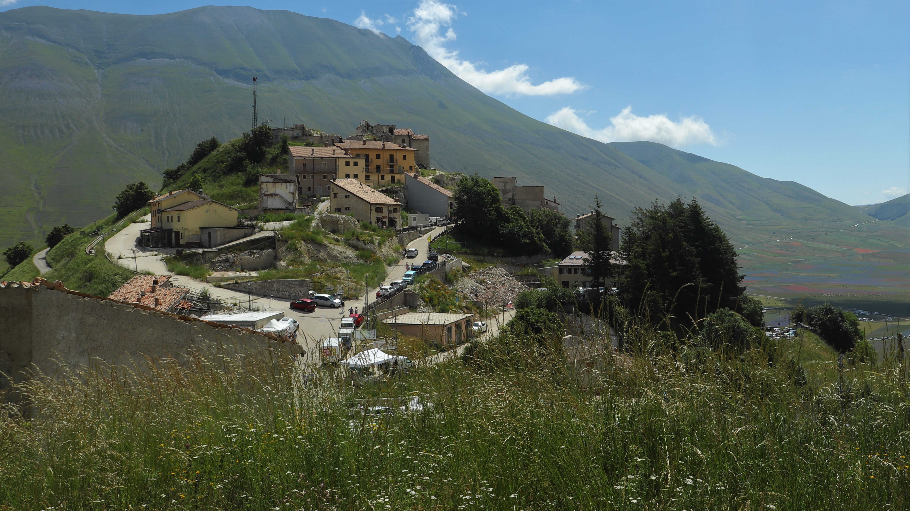

Castelluccio di Norcia
L’esperienza di Castelluccio è stata forse la più profonda a livello umano.
Vivo a soli quaranta minuti di auto da questo paesino, così la scorsa estate io e la mia fidanzata decidemmo di andare a vedere la famosissima fioritura annuale di Castelluccio di Norcia.
Come dicevo, vivo piuttosto vicino, ma nel 2016 ho avuto la fortuna di star studiando a Napoli. Quel terremoto che segnerà per sempre la storia del centro Italia, ha anche dato vita, qui, ad un paradosso paesaggistico unico.
La fioritura

La prima cosa che si vede quando finalmente si è quasi a destinazione, sono queste enormi distese colorate ed un piccolo bosco strutturato in modo da rendere la forma dell’Italia a chi lo guarda da lontano.
Ovviamente la natura ha il dominio assoluto. In un mondo ormai sempre più urbanizzato, in cui le aree verdi vengono ricreate nel mezzo delle città piuttosto che preservate, visitare luoghi tanto rurali e tanto magnifici quanto Castelluccio aiuta a smontare quella sensazione di artificiosità dilagante che caratterizza ormai qualsiasi zona verde urbana.
Il paese di Castelluccio
Questo è il motivo per cui ho parlato di paradosso. Lasciando da parte l’assurdità tutta italiana di vedere luoghi ancora distrutti a distanza di anni, come anche L’Aquila, alzando un attimo la testa, appena sopra i campi di fiori, si può vedere su un’altura il centro del paesino che quasi pare cadere a pezzi.
Questo scenario tuttavia inizia molto prima. Appena più in alto di Arquata del Tronto, lungo la strada prefabbricati e ruderi si alternano in una danza struggente che non può lasciare impassibile nessun visitatore. Per questo credo che una volta arrivati in paese si apprezzi tutto in maniera diversa. Le case sono ruderi, un paio di stabili vendono insaccati e primi piatti del luogo, ti siedi su un muretto, scarti il tuo panino col ciauscolo davanti a distese di colori, e ti godi la vita.